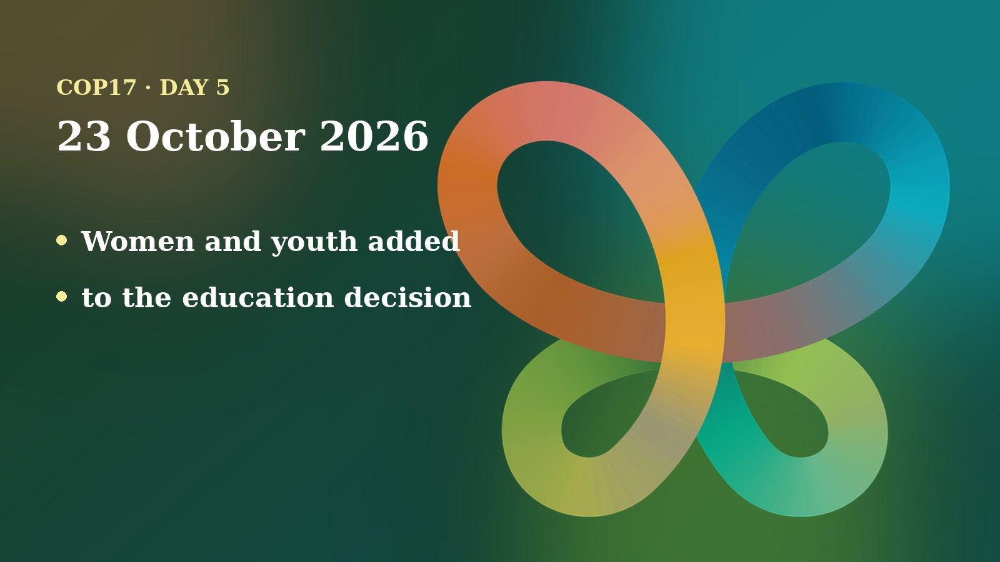

Friday was the day the conference started to produce finished texts. After a morning and afternoon of working groups and four contact groups, the evening plenary adopted its first decisions. Delegates also made a small but telling change: they added “women and youth” to the decision on education and public awareness.
The day in negotiations
Working Group I worked through drafts under the Nagoya Protocol, the treaty on sharing the benefits of genetic resources. Working Group II took up the Cartagena Protocol on Biosafety and the main Convention. Contact groups met on risk assessment of living modified organisms, areas of possible further work under the Global Biodiversity Framework, the financial mechanism, and Article 8(j), the part of the Convention about Indigenous peoples and local communities. This account follows the Earth Negotiations Bulletin (ENB) report for the day and the UN’s unofficial, automatic transcripts, which are not an official record and may contain errors.
In Working Group I, the Nagoya texts on monitoring, assessment and review, implementation and finance were approved, several of them with brackets, meaning wording that is still disputed. According to ENB, delegates disagreed about a reference to the global fund-sharing mechanism in Article 10 of the Protocol: India, Japan and the EU wanted it deleted, while South Africa and Uganda wanted to keep it. They also split over whether to mention the high-seas biodiversity treaty (BBNJ) when asking for cooperation among agreements. Saudi Arabia and Argentina wanted it removed; the UK and the EU wanted wider wording. On money, delegates agreed to ask the Global Environment Facility (GEF) to consider funding for the Protocol, with attention to the least developed countries and small island states.
In Working Group II, the big item was soil biodiversity. ENB reports that delegates agreed to encourage countries to bring soil life into national planning, to improve coordination between agriculture, environment and health sectors, and to involve farmer organizations, in particular smallholders, family farmers and agroecological producers. They did not agree on support for soil research, on phasing out harmful subsidies, or on how to refer to pollution: Panama wanted some references deleted, and Russia, opposed by the EU and others, wanted to name “trace elements and heavy metals” instead. Chair Hesiquio Benítez Díaz set up a Friends of the Chair group to settle what remains.
In the evening, the stocktaking plenary, chaired by COP17 President Hambardzum Matevosyan, adopted a first set of decisions. The Cartagena Protocol meeting adopted texts on compliance, liability and redress, socioeconomic considerations, the Biosafety Clearing-House, monitoring, detection of living modified organisms and the financial mechanism. The decision on national legislation and new biotechnology passed after a paragraph asking the Compliance Committee to comment on the quality of countries’ information was deleted. The main COP adopted the Gender Plan of Action review, the clearing-house mechanism, communication and education, and invasive alien species. The Nagoya Protocol meeting adopted its compliance and reporting decisions.
Positions and stakeholders
Most of the day’s sharpest exchanges came from named countries and groups, as reported by ENB and the transcripts:
- Guatemala welcomed the gender decision and asked for a subsidiary body on gender and biodiversity.
- Uruguay, supported by Panama, asked to add “women and youth” to the education decision. Panama added that small delegations with two people cannot follow every room and lacked funds to attend all meetings.
- Fiji accepted the text to avoid blocking consensus, but said wording from the Pacific seats on dedicated resources for Indigenous peoples, women and youth to run education in their own languages was removed.
- The UK dropped the bracketed words “mutually agreed terms” so the invasive species decision could pass.
- The EU and Panama, among others, opposed the Compliance Committee proposal on information quality, which was deleted before adoption.
- Ethiopia withdrew its offer to host COP18 and said it is interested in hosting COP19. Ecuador and Panama both offered COP18, and Jamaica said consultations between the two Latin American and Caribbean candidates continue.
On Article 8(j), the new subsidiary body for Indigenous peoples and local communities, delegates worked through a heavily bracketed text on budget, national focal points and national legislation. ENB says an informal group was set up to deal with differences over how the Indigenous co-chair would be chosen. In the finance contact group, delegates agreed to ask the GBF Fund to step up fundraising and to report pledges and payments by source, and to invite developed countries to contribute or increase contributions. Talks on its list of requests continue.
Numbers to know
- 7 Cartagena Protocol decisions adopted in the evening plenary with minor or no amendments, plus an eighth after a deletion, as listed by ENB.
- 4 decisions adopted by the main COP: gender plan review, clearing-house, communication and education, invasive alien species.
- 3 countries offered to host COP18, according to the Secretariat (Ecuador, Ethiopia, Panama); Ethiopia then withdrew.
- 4 contact groups met on Friday, per ENB.

Through a child and youth lens
Friday offered a clear example of why naming matters. When the education and public awareness decision came up, Uruguay asked that “women and youth” be added after Indigenous peoples and local communities in the paragraph about technical and financial support. Panama supported it, and the plenary adopted the text as amended. Children were not named in the passages I read.
Fiji’s statement is the other half of the story. It said language on dedicated resources for community-led education, including in people’s own languages, had been removed. For children and young people, that is where education decisions become real: who pays for a youth-led programme, and whether it can run in the language a child speaks at home. Panama’s point about small delegations is also a youth issue, because the same gap in staff and funds shuts out younger and newer voices.
I am a member of the UNICEF Global Delegation and I advocate for including children and youth in the CBD process. From that standpoint, the soil text matters too: it asks that women and youth take part in agricultural and land planning, and healthy soil is part of the food and health future of today’s children. ENB and the transcripts did not report a separate youth or children’s statement on Friday, so I am not claiming one. What to watch is whether dedicated resources for youth return in later texts.
On my calendar today
Scheduled for today: a session titled “Climate-resilient forest ecosystems: Future pathways for Armenia”, organised by the Swiss Federal Institute for Forest, Snow and Landscape Research (WSL), 10:00–11:00 in the Green Zone, where I am listed as a speaker. The Armenia Tree Project booth is scheduled to be co-hosted from 14:00 to 20:00. Booth co-hosting does not block the calendar, and I am open to speaking requests.
What to watch tomorrow
- Whether the Friends of the Chair group settles soil biodiversity, subsidies and pollution wording.
- How the Article 8(j) group resolves the Indigenous co-chair question for the new subsidiary body.
- Whether the GBF Fund requests and the Nagoya Article 10 brackets move.
- Whether Ecuador and Panama settle who hosts COP18.
Follow where I am each day on my COP17 schedule, and the daily news in the Newsroom.
Sources
- Earth Negotiations Bulletin, Vol. 9 No. 888 (2026), UN Biodiversity Conference Highlights: Friday, 23 October 2026 (IISD). https://enb.iisd.org/sites/default/files/2026-10/enb09888e.pdf
- UN Transcripts (23 Oct 2026), Plenary (2nd meeting), UN Convention on Biodiversity - COP 17. Automatic, unofficial transcript. https://transcripts.un.org/en/asset/k1m/k1m8nhzcvu
- UN Transcripts (23 Oct 2026), Working Group II (7th meeting), UN Convention on Biodiversity - COP 17. Automatic, unofficial transcript. https://transcripts.un.org/en/asset/k1g/k1g1ql0ayh
- UN Transcripts (23 Oct 2026), Working Group I (4th meeting), UN Convention on Biodiversity - COP 17. Automatic, unofficial transcript. https://transcripts.un.org/en/asset/k13/k138mxzt0y